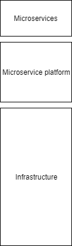

JLupin
usługi w javie dla niezaawansowanych
A little bite of history
Good old J2EE
package hello;
import javax.ejb.*;
import java.rmi.*;
public interface HelloHome extends EJBHome {
public Hello create() throws CreateException, RemoteException;
public Hello create(String message) throws CreateException, RemoteException;
public Hello create(Collection messages) throws CreateException, RemoteException;
}
package hello;
import javax.ejb.*;
public interface HelloLocalHome extends EJBLocalHome {
public HelloLocal create() throws CreateException;
public HelloLocal create(String message) throws CreateException;
public HelloLocal create(Collection messages) throws CreateException;
} When you should use...
Remote?
Local?
You don't know
I don't know too.
Fundamental issue
Solution – make everything remote
Simple application
Bank
Demo 1
Setup project
JLupin has IDE tooling (with bugs)
JLupin is Spring friendly
JLupin is maven based
App Switch
Demo 2
Call me maybe
JLupin does not contaminate code
JLupin contaminate configuration
Configuration is String based
Demo 3
Deployment
CI/CD ready
Manual deployment possible
What is JLupin?

Demo 4
Maintenance
Zero downtime
Web console
In project configuration
How is JLupin works?

Other stuff
Edge balancer
JMX Extractor
Reactive channels & queues